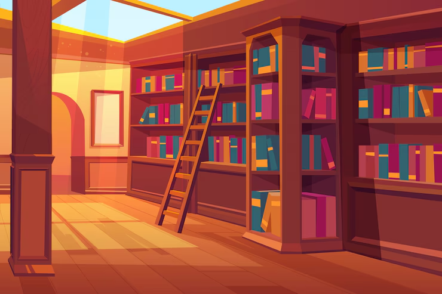

Meus projetos

Minha Biblioteca: Uma Webpage Personalizada
Este projeto é uma página web que apresenta uma lista dos meus livros favoritos, incluindo informações sobre os autores, datas de publicação e links para compras.
Quiz de filosofia e esportes
Este projeto é um jogo interativo com pergunstas relacionadas a itens como esporte ou filosofia.
Socratesflix:É uma pagina com musica diverificadas da minha escolha
Este projeto do github te como objetivo ser um site com diversas musicas que gosto de ouvir.